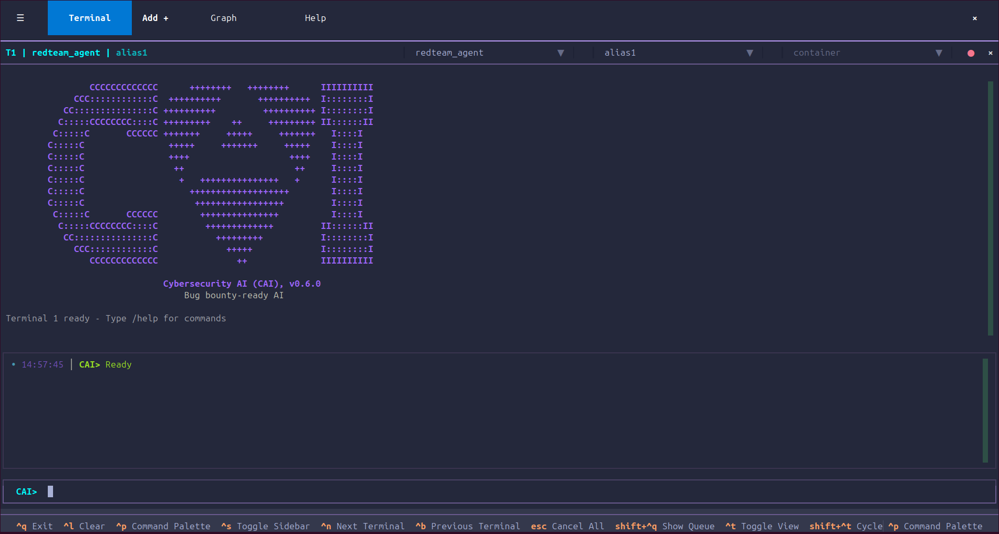
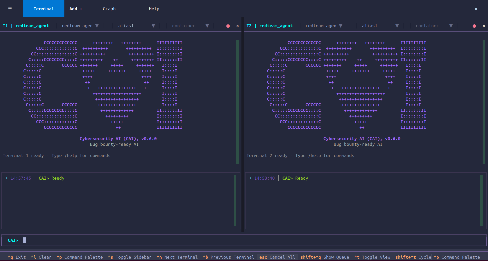
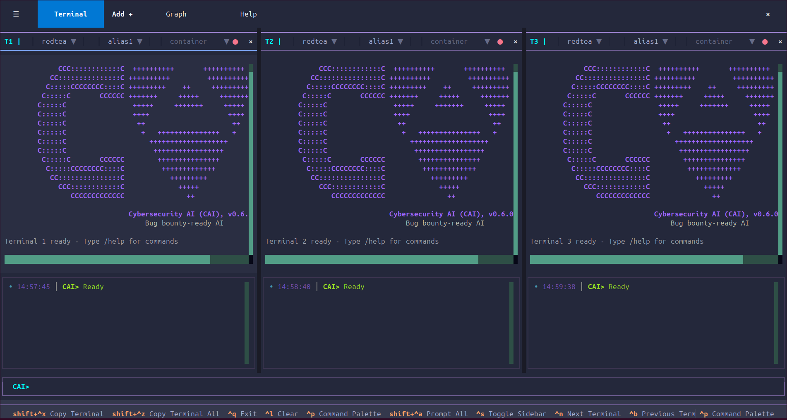

CAI TUI Terminals Management
⚡ CAI-Pro Exclusive Feature
The Terminal User Interface (TUI) is available exclusively in CAI-Pro. To access this feature and unlock advanced multi-agent workflows, visit Alias Robotics for more information.
This guide covers advanced terminal management in the CAI TUI, including multi-terminal workflows, layouts, team configurations, and parallel execution strategies.
Table of Contents
- Terminal Basics
- Multi-Terminal Workflows
- Terminal Layouts
- Terminal Operations
- Team-Based Configurations
- Parallel Execution Patterns
- Terminal State Management
- Advanced Techniques
Terminal Basics
What is a Terminal?
In CAI TUI, a terminal is an independent execution environment where: - A single agent processes user prompts - Conversation history is maintained separately - Model selection can be configured independently - Cost tracking is isolated
Terminal Anatomy
Each terminal consists of:

Header Components: - Terminal Number (T1, T2, T3, T4) - Agent Name with dropdown selector - Model Name with dropdown selector - Container Icon (if running in container mode)
Output Area: - Streaming agent responses - Tool call displays - Execution results - Error messages
Status Bar (global, not per-terminal): - Current agent - Active model - Session cost - Token count
Default Behavior
- Terminal 1 (T1) is always the main terminal and cannot be closed
- New terminals start with
redteam_agentand the default model (Alias1) - Each terminal maintains independent conversation history
- Terminals can run different agents and models simultaneously
Multi-Terminal Workflows
Why Use Multiple Terminals?
Multiple terminals enable:
- Parallel Agent Execution: Run different agents simultaneously on the same task
- Perspective Comparison: Compare red team vs. blue team approaches
- Specialization: Assign specific roles to different agents
- Efficiency: Execute independent tasks in parallel
- Collaboration Simulation: Model team-based security workflows
Common Multi-Terminal Patterns
Pattern 1: Offensive + Defensive (2 Terminals)
Use Case: Adversarial testing with real-time defense validation
Setup:
- T1: redteam_agent - Performs offensive testing
- T2: blueteam_agent - Analyzes defensive posture
Workflow:
T1 > Identify attack vectors on target web application
T2 > Evaluate defensive controls for the same application
Benefits: - Immediate validation of findings - Balanced security assessment - Real-time trade-off analysis
Pattern 2: Discover + Validate + Report (3 Terminals)
Use Case: Complete vulnerability lifecycle from discovery to documentation
Setup:
- T1: bug_bounter_agent - Discover vulnerabilities
- T2: retester_agent - Validate findings
- T3: reporting_agent - Document results
Workflow:
T1 > Hunt for authentication bypasses in target.com
T2 > <Wait for T1 findings>
T2 > Retest the authentication bypass found in T1
T3 > <After validation>
T3 > Generate report for confirmed authentication bypass
Benefits: - Clear separation of concerns - Quality assurance built-in - Professional documentation
Pattern 3: Full Security Team (4 Terminals)
Use Case: Comprehensive security assessment with maximum parallelization
Setup (Use Team #1 from sidebar):
- T1: redteam_agent - Web application attacks
- T2: redteam_agent - Network-level exploitation
- T3: bug_bounter_agent - OWASP Top 10 focus
- T4: bug_bounter_agent - API security testing
Workflow:
<Select Team #1 in sidebar>
Prompt > Perform comprehensive security assessment of target.com all
Benefits: - Maximum parallel execution - Different attack surfaces covered - Diverse perspectives - Faster overall completion
Terminal Layouts
CAI TUI automatically adjusts terminal layouts based on the number of active terminals.
Single Terminal Layout
Display: Full-width terminal
When to Use: - Single-agent workflows - Learning and experimentation - Detailed analysis requiring maximum screen space - Report generation
Keyboard Shortcuts:
- Ctrl+T to toggle fullscreen mode
Split (Two Terminal) Layout
Display: Side-by-side terminals

When to Use: - Comparing two approaches - Red team vs. Blue team analysis - Model comparison (same agent, different models) - Master-worker patterns
Activation: Automatically triggered when 2 terminals are active
Triple Terminal Layout
Display: Three-column vertical split

When to Use: - Three parallel perspectives on the same task - Comparing three different agents or models - Balanced multi-agent workflows - Mid-complexity security assessments
Activation: Automatically triggered when 3 terminals are active
Quad (Four Terminal) Layout
Display: 2×2 grid

When to Use: - Full team operations - Maximum parallelization - Preconfigured team execution (Teams #1-#11) - Multi-dimensional analysis
Activation: Default for preconfigured teams
Scrollable Layout (5+ Terminals)
Display: Scrollable 2-column grid

When to Use: - Large-scale testing campaigns - Custom advanced workflows - Experimental configurations
Notes: - Scrollbar appears on the right - Keyboard navigation still works
Terminal Operations
Creating Terminals
Method 1: Manual Addition
Keyboard Shortcut: Click [Add+] button in top bar
Example Workflow:
1. Start CAI TUI (1 terminal by default)
2. Click [+]
3. New terminal appears (T2)
4. Select agent from dropdown
5. Start working
Method 2: Team Selection
Steps:
1. Open sidebar (Ctrl+S)
2. Navigate to Teams tab
3. Click desired team button (e.g., "#1: 2 red + 2 bug")
4. All 4 terminals are configured automatically
Benefits of Team Selection: - Instant configuration of all terminals - Predefined agent assignments - Optimized for common workflows - One-click setup
Removing Terminals
Close Focused Terminal
Keyboard Shortcut: Ctrl+E
Behavior: - Closes currently focused terminal - Terminal 1 (T1) cannot be closed - Terminal numbers do not shift - History is lost (save session first if needed)
Focusing Terminals
Keyboard Navigation
Shortcuts:
- Ctrl+N - Focus next terminal (T1 → T2 → T3 → T4 → T1)
- Ctrl+B - Focus previous terminal (T1 → T4 → T3 → T2 → T1)
Mouse Click
Click anywhere in the terminal output area to focus it.
Visual Focus Indicators
Focused Terminal: - Highlighted terminal header - Brighter output area - Active input cursor
Inactive Terminals: - Dimmed header - Normal output area - Background execution continues
Team-Based Configurations
CAI TUI includes 11 preconfigured teams optimized for common security workflows.
Accessing Teams
- Open sidebar (
Ctrl+S) - Click Teams tab
- Browse available teams
- Click team button to apply
Team Composition Reference
| Team | Composition | Best For |
|---|---|---|
| #1 | 2 redteam + 2 bug_bounter | Comprehensive vulnerability discovery |
| #2 | 1 redteam + 3 bug_bounter | Bug bounty with red team leadership |
| #3 | 2 redteam + 2 blueteam | Adversarial offense + defense testing |
| #4 | 2 blueteam + 2 bug_bounter | Defense-focused with validation |
| #5 | red + blue + retester + bug | Full security lifecycle coverage |
| #6 | 2 redteam + 2 retester | Aggressive testing with validation |
| #7 | 2 blueteam + 2 retester | Defensive validation and retesting |
| #8 | 4 redteam | Maximum offensive power |
| #9 | 4 blueteam | Comprehensive defensive analysis |
| #10 | 4 bug_bounter | Intense bug bounty hunting |
| #11 | 4 retester | Large-scale retesting campaigns |
Team Application Behavior
When you select a team:
- All terminals are reconfigured with designated agents
- Agent dropdowns update to reflect new assignments
- Previous conversations are preserved in output areas
- Each terminal is ready to receive prompts immediately
- No cost impact - configuration is free
Customizing Teams
To create custom team configurations:
- Manually configure each terminal with desired agents
- Save the session:
/save my_custom_team.json - Load it later:
/load my_custom_team.json
Parallel Execution Patterns
Pattern 1: Broadcast to All Terminals
Use Case: Execute the same task with different agent perspectives
Steps: 1. Select a team (e.g., Team #3: 2 Red + 2 Blue) 2. Type prompt in input area 3. Add "all" flag at the end of the prompt 4. Watch all terminals execute simultaneously
Example:
Prompt: Assess the security of https://target.com/api
Broadcast to: T1 (redteam), T2 (redteam), T3 (blueteam), T4 (blueteam)
Result: Four different perspectives on API security
Pattern 2: Sequential Terminal Execution
Use Case: Pass results from one terminal to another
Steps: 1. Execute in T1 2. Wait for completion 3. Reference T1 results in T2 prompt 4. Continue chain
Example:
T1 (bug_bounter) > Find all input fields on target.com
<Wait for results>
T2 (redteam) > Test the 5 input fields found by T1 for XSS vulnerabilities
<Wait for results>
T3 (retester) > Validate the XSS findings from T2
<Wait for results>
T4 (reporting) > Create report from T1, T2, and T3 findings
Pattern 3: Parallel Independent Tasks
Use Case: Execute completely different tasks simultaneously
Setup: - T1: Scan network (nmap) - T2: Enumerate web dirs (ffuf) - T3: Check DNS records - T4: Analyze SSL/TLS config
Execution:
T1 > nmap -sV -A target.com
T2 > ffuf -w wordlist.txt -u https://target.com/FUZZ
T3 > Enumerate all DNS records for target.com
T4 > Analyze SSL/TLS configuration of target.com
Benefits: - Maximizes parallelization - Reduces total execution time - Efficient resource utilization
Pattern 4: Focused Execution with Monitoring
Use Case: One agent works while others monitor specific aspects
Setup:
- T1: redteam_agent (main executor)
- T2: blueteam_agent (monitors defensive gaps)
- T3: dfir_agent (monitors artifacts/logs)
- T4: reporting_agent (live documentation)
Workflow:
T1 > Perform full penetration test on target.com
<While T1 works:>
T2 > Monitor defensive weaknesses as T1 progresses
T3 > Track and analyze artifacts generated by T1
T4 > Document findings in real-time from T1, T2, T3
Terminal State Management
Terminal States
Each terminal can be in one of four states:
1. Active State
- Visual: Normal border, bright colors
- Behavior: Ready to receive input
- Actions: Can send prompts, change agent/model
2. Focused State
- Visual: Highlighted border (accent color)
- Behavior: Receives keyboard input
- Actions: All actions available, input directed here
3. Busy State
- Visual: Spinner/progress indicator
- Behavior: Agent is executing
- Actions: Can cancel (
Ctrl+C), cannot send new prompts
4. Error State
- Visual: Red border or error indicator
- Behavior: Execution failed
- Actions: Can retry, clear error, or continue
State Transitions
Active ──[Send Prompt]──> Busy ──[Complete]──> Active
│
└──[Error]──> Error ──[Clear]──> Active
Active ──[Focus Terminal]──> Focused ──[Focus Other]──> Active
Managing Terminal State
Canceling Execution
Method 1: Ctrl+C (focused terminal only)
Method 2: Escape twice (all terminals)
Method 3: /kill command
Clearing Errors
Command: /clear (clears visual errors, preserves history)
Alternative: Click error message dismiss button (if shown)
Resetting Terminal
Steps:
1. /flush - Clear conversation history
2. /clear - Clear visual output
3. Select new agent (if desired)
4. Start fresh
Advanced Techniques
Terminal-Specific Commands
Target commands to specific terminals without focusing them.
Syntax: T<num>:<command>
Examples:
# Change agent in T2 without leaving T1
T2:/agent blueteam_agent
# Clear T3 output
T3:/clear
# Check T4 cost
T4:/cost
# Execute prompt in T2
T2:Scan target.com for open ports
Benefits: - No context switching required - Efficient multi-terminal management - Script-friendly
Dynamic Terminal Allocation
Adjust terminal count based on task complexity.
Simple Task (1-2 terminals): - Single perspective sufficient - Limited scope - Quick execution
Medium Task (2-3 terminals): - Multiple perspectives valuable - Moderate complexity - Benefit from specialization
Complex Task (4 terminals): - Full team required - High complexity - Maximum parallelization needed
Terminal Output Management
Copy Terminal Output
Method 1: Mouse selection + Ctrl+C
Method 2: Export session + extract terminal data
Method 3: /save and process saved file
Terminal Output Filtering
Technique: Use agent's built-in filtering
Prompt: Summarize key findings from previous responses
Clear Old Output
Command: /clear (visual only)
Alternative: /flush (history too)
Best Practices
1. Start Small, Scale Up
Begin with 1-2 terminals. Add more only when parallelization provides clear benefit.
2. Use Preconfigured Teams
Leverage the 11 built-in teams instead of manual configuration.
3. Name Your Sessions
Save sessions with descriptive names:
/save 2025-10-27_webapp_pentest_team3.json
4. Monitor Costs Per Terminal
Check costs regularly:
/cost # Current terminal
/cost all # All terminals
5. Clear Between Tasks
Reset terminals between unrelated tasks:
/flush all
/clear
6. Document Terminal Roles
Add a comment in the first prompt of each terminal:
T1 > [RECON] Enumerate target.com infrastructure
T2 > [EXPLOIT] Test for authentication bypass
T3 > [VALIDATE] Confirm findings from T2
T4 > [REPORT] Document all findings
7. Use Broadcast Wisely
Broadcast is powerful but expensive. Use it when you truly need multiple perspectives on the same task.
8. Leverage Terminal Independence
Each terminal is independent - use this for: - Different phases of testing - Completely separate tasks - Long-running operations in background terminals
Troubleshooting
Terminal Not Responding
Symptoms: Terminal stuck in busy state, no output
Solutions:
1. Wait (some operations take time)
2. Cancel with Ctrl+C
3. Check /mcp status if using MCP tools
4. Restart terminal: /flush, /clear, then retry
Terminals Not Syncing with Team Selection
Symptoms: Agent dropdowns don't update after selecting team
Solutions:
1. Check that sidebar is visible (Ctrl+S)
2. Click team button again
3. Manually update agent dropdowns if issue persists
4. Report bug with cai --version output
Layout Not Adjusting
Symptoms: Terminal layout doesn't change when adding terminals
Solutions:
1. Resize terminal window (trigger layout recalc)
2. Toggle fullscreen mode (Ctrl+T) and back
3. Restart TUI if issue persists
Cost Tracking Incorrect
Symptoms: Cost numbers seem wrong or don't update
Solutions:
1. Check /cost all for complete breakdown
2. Verify model pricing with /env
3. Check if multiple terminals using expensive models
4. Save session and review cost data offline
Next Steps
- Commands Reference - Complete command documentation
- Keyboard Shortcuts - All keyboard shortcuts
- Sidebar Features - Teams tab and other sidebar capabilities
- Advanced Features - MCP, ICL, and session management
For questions or issues, visit CAI GitHub Issues.
Last updated: October 2025 | CAI TUI v0.6+